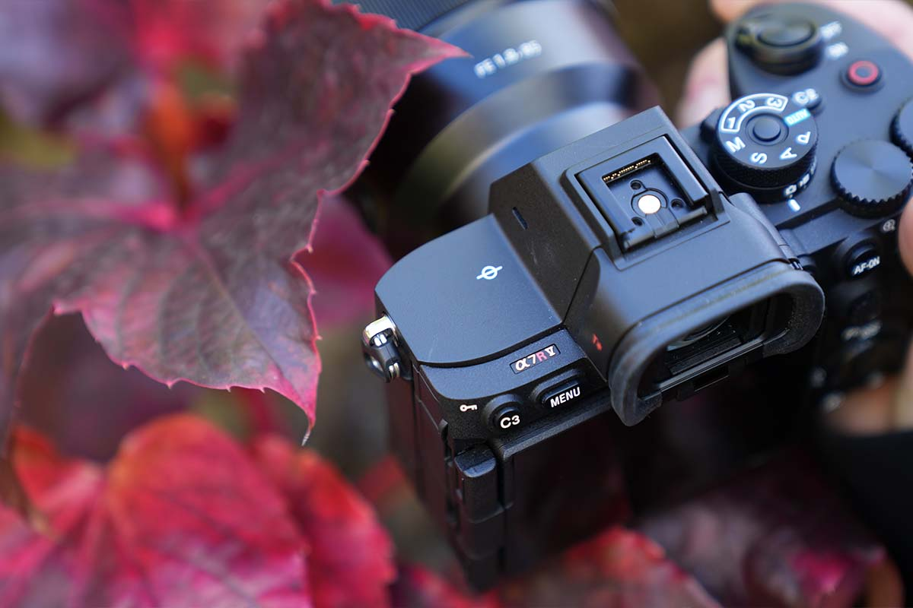
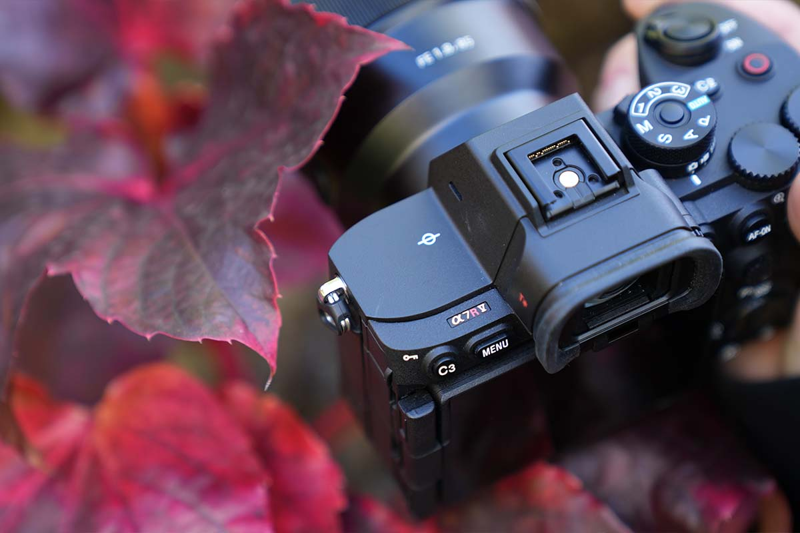

Alpha 7R V
Vollformatkamera mit 61 MP Exmor R CMOS Sensor
Vollformatkamera mit 61 MP Exmor R CMOS Sensor


 

Die Sony Alpha 7R Mark V ist eine spiegellose Vollformatkamera mit einem rückwärtig belichteten 61 MP Exmor R CMOS Vollformat-Sensor. Durch den verbesserten integrierten 5-Achsen Bildstabilisator werden gestochen scharfe Bilder mit einer bis zu 8-stufigen Kompensation ermöglicht. Das einzigartige auf drei Achsen verstellbare Display und ein hochauflösender elektronischer Sucher sorgen für ein professionelles Aufnahmeerlebnis. Ein KI-basierter Autofokus bringt eine akkurate, schnelle und konsistente Autofokusnachführung von Motiv in Echtzeit mit sich. Erstmals erkennt die KI-basierte Technologie nicht nur Menschen, Tiere und Vögel, sondern auch Autos, Züge, Flugzeuge und Insekten, sodass auch in schwierigen Aufnahmesituationen Fotos und Videos scharfe Inhalte festgehalten werden können.